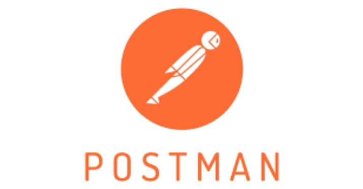

Гайд по Postman: Основы и Практическое Применение

Введение в Postman
Postman — это мощный инструмент для работы с API, который позволяет отправлять HTTP-запросы, тестировать, документировать и автоматизировать взаимодействие с веб-сервисами. Он особенно полезен для:
- Разработчиков API
- Тестировщиков
- Инженеров по автоматизации
- Аналитиков
Postman помогает:
- Отправлять GET, POST, PUT, DELETE и другие HTTP-запросы.
- Сохранять и организовывать коллекции запросов.
- Автоматизировать тестирование API.
- Генерировать документацию.
- Работать с переменными и окружениями.
- Мокать API (создавать mock-серверы).
1. Установка Postman
Шаг 1: Скачивание
Перейдите на официальный сайт Postman и выберите версию для вашей ОС:
- Windows
- macOS
- Linux
Шаг 2: Установка
Запустите установщик и следуйте инструкциям.
Шаг 3: Регистрация (опционально)
Postman можно использовать без аккаунта, но для синхронизации коллекций между устройствами рекомендуется создать учетную запись.
2. Основные функции Postman
2.1. Отправка HTTP-запросов
- Откройте Postman.
- Нажмите New Request (или
+на вкладке). - Выберите метод (GET, POST и т. д.).
- Введите URL (например,
https://api.example.com/users). - Нажмите Send.
2.2. Просмотр ответа
После отправки запроса вы увидите:
- Status Code (200, 404 и др.).
- Body (JSON, XML, HTML и т. д.).
- Headers (метаданные ответа).
- Cookies (если есть).
2.3. Работа с параметрами и заголовками
- Query Parameters (для GET-запросов):
https://api.example.com/users?page=1&limit=10 - Headers (например,
Authorization: Bearer token). - Body (для POST/PUT):
- raw (JSON, XML, текст).
- form-data (для загрузки файлов).
- x-www-form-urlencoded (стандартные формы).
3. Работа с коллекциями
Коллекции помогают организовывать запросы.
3.1. Создание коллекции
- Нажмите New → Collection.
- Укажите название и описание.
- Добавьте запросы (перетащите или создайте внутри коллекции).
3.2. Экспорт и импорт коллекций
- Экспорт:
- Кликните на
...у коллекции → Export. - Выберите формат (JSON).
- Импорт:
- Нажмите Import → загрузите файл.
3.3. Документирование API
- В коллекции можно добавлять описания.
- Используйте Publish Docs для генерации публичной документации.
4. Переменные и окружения
4.1. Глобальные и локальные переменные
- Глобальные: Доступны во всех запросах.
- Локальные: Только в текущем окружении.
Пример:
{{base_url}}/users → https://api.example.com/users
4.2. Создание окружения
- Нажмите Environments → New.
- Добавьте переменные (например,
base_url = https://api.example.com). - Выберите окружение в выпадающем списке.
5. Автоматизация тестирования
5.1. Написание тестов на JavaScript
В Postman можно добавлять скрипты в Tests:
pm.test("Status code is 200", function () {
pm.response.to.have.status(200);
});
pm.test("Response has data", function () {
var jsonData = pm.response.json();
pm.expect(jsonData.users).to.be.an('array');
});
5.2. Запуск коллекции через Runner
- Откройте Collection Runner.
- Выберите коллекцию и окружение.
- Нажмите Run.
6. Mock-серверы
Позволяют имитировать API без реального бэкенда.
6.1. Создание Mock-сервера
- Кликните New → Mock Server.
- Выберите коллекцию или создайте примеры запросов.
- Укажите URL мока (например,
https://your-mock-id.mock.pstmn.io).
6.2. Использование
Отправляйте запросы на mock-URL, Postman вернет заранее заданные ответы.
7. Советы по использованию
- Группировка запросов: Используйте папки в коллекциях.
- Pre-request Scripts: Автоматическая настройка запросов перед отправкой.
- Интеграция с CI/CD: Запуск тестов через Newman (CLI-версия Postman).
- Экспорт в cURL: Кликните Code → копируйте cURL-команду.
Заключение
Postman — это незаменимый инструмент для работы с API. Начните с простых запросов, освойте коллекции и автоматизацию, затем переходите к mock-серверам и интеграции с CI/CD.
🚀 Готовы к работе? Вперед к освоению Postman!
Если есть вопросы — спрашивайте в комментариях!